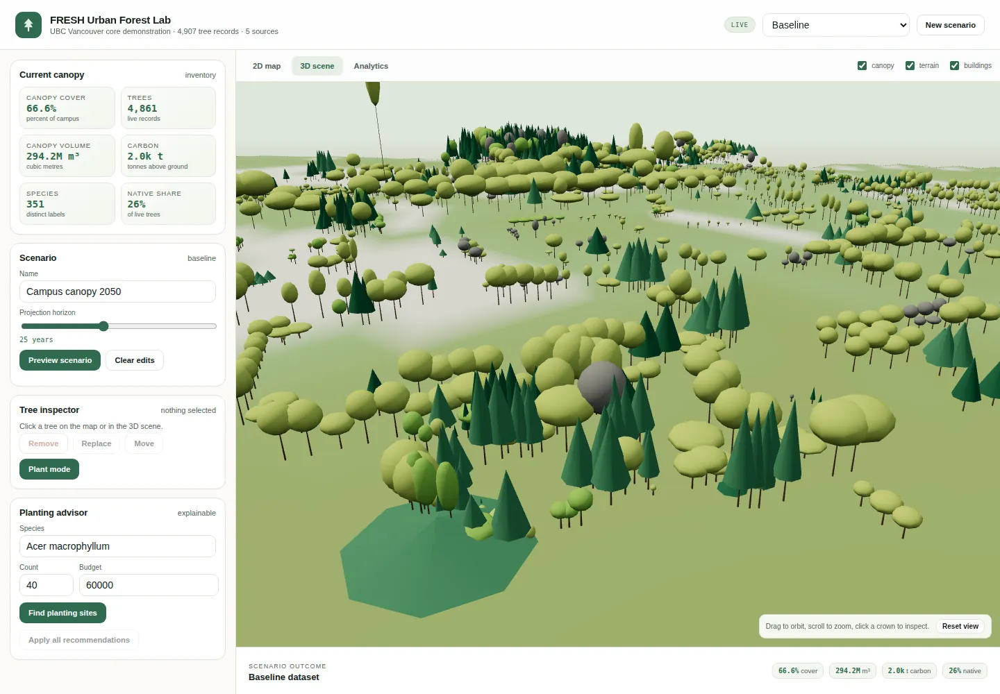
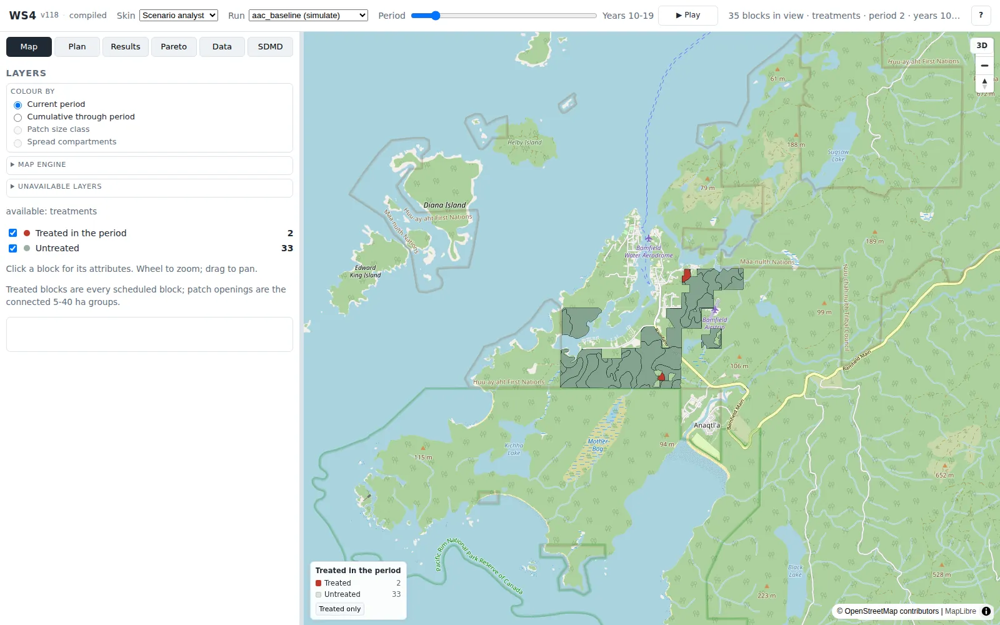
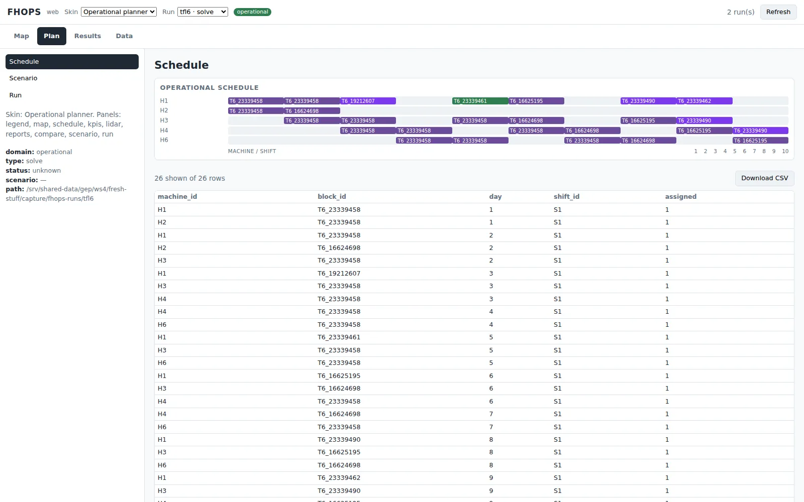

Find it.
Prove it.
- HectaresBCrecovered public layers
- Urban Forest LabLiDAR + tree inventory
- Modelwrightspreadsheet archaeology
- figrecoverdata from published figures
UBC FRESH LAB · OPEN MODELLING STACK
A spatially explicit estate model. A harvesting operations planner. An urban canopy twin. A corridor vegetation planner. And the unglamorous glue that makes all of it reproducible.



01 · The headliners
These are the ones to open first. Each is a working system with a real interface, public data behind it, and a clear question it answers.
02 · The whole bench
Twenty projects, grouped by what they do. Pick a tab to see the interface, the pitch, and the live door in. Deep links work: every project has its own URL hash.
03 · How it fits together
No giant monolith. A set of small, open packages that agree on a few things: compiled datasets and manifests as contracts, provenance on every input, and a replayable result.
WS3 is the mature predecessor. Many existing models still run on it; WS4 is the new spatially explicit lane.
04 · Go see it
This portal is public. Most lab-hosted demos sit behind UBC Cloudflare Access and may ask for a UBC CWL or Globus login. The Brushline demo is static and public. No accounts are created by this site.
Lab-hosted services can pause between deployments. If a door is closed, the screenshots and repository are still here. Link check · 15 Nov 2026
05 · Field notes
The short log of what changed on this portal. The full history lives in the repository changelog.
fresh-stuff.01101.dev now opens without a lab login. Individual demos may still ask for CWL or Globus.
A public GitHub Pages demo and the lab-hosted 3D studio now share a full-width banner at the top of the tour.
An internal link checker runs in CI, and the screenshot refresh tool records the local demos and fixture runs behind each image.
The synthetic-corridor portfolio opens without a lab account, with its synthetic evidence clearly labelled.
06 · Why this exists
The FRESH Lab builds open tools for forest and ecosystem decisions, then gives them away. Not as slideware — as working software, with public data, tests, documentation, and a live interface where we can manage it.
The stack is deliberately composable. A compiled dataset is a contract. A manifest is a promise that someone else can rebuild the result. The web UIs are not the model; they are a window into the model’s own state, so you can check the claim instead of trusting the screenshot.
Built at UBC Vancouver · Department of Forest Resources Management
Every number names its method. Every run leaves a record. If we cannot verify it, we say so.
No monolith. Packages own their semantics and meet at compiled datasets, manifests, and provenance.
Public data, public repos, public docs. The demos are a front door, not a product lock-in.
The long tail: smaller tools, research packages, and useful weirdness.